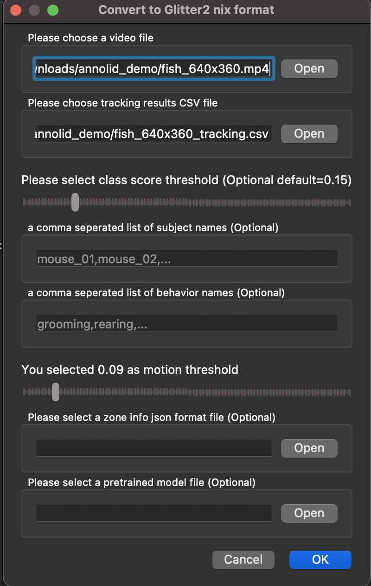
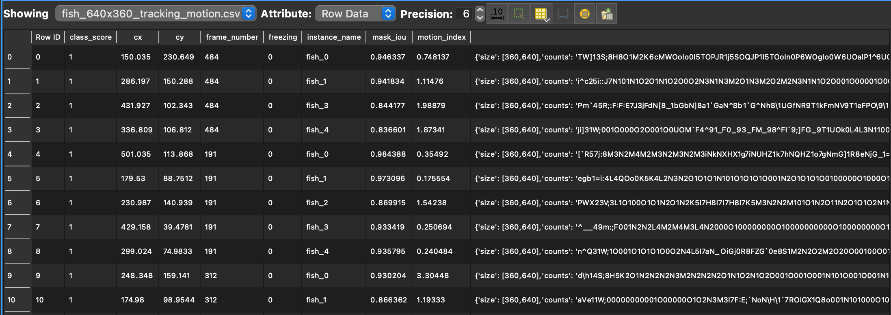

Freezing & Dense Motion Assays#
Annolid quantifies fine-grained immobility and freezing behavior (for example in fear conditioning, isolation USV studies, or zebrafish startle assays) by combining instance masks with dense optical flow — measuring movement strictly inside each animal’s body mask rather than being fooled by bedding flicker or background noise.
Option 1: Dense Optical-Flow Motion Estimation in the GUI#
Track your video first so you have a tracking CSV (for example
<video_stem>_tracking.csv).Launch
annolidand openFile → Glitter2.Choose your source video file and its matching tracking CSV file.
Set a motion threshold greater than zero (for example
0.09). Frames whose normalized mask motion index falls below this threshold are labeledfreezing.


Fig. 44 Configuring the dense optical-flow motion and freezing threshold in Annolid.#
Annolid generates <video_stem>_tracking_motion.csv (for example fish_640x360_tracking_motion.csv) alongside an optional motion-flow visualization video:


Fig. 45 First rows of the generated *_tracking_motion.csv showing per-frame motion_index and binary freezing labels.#
Tuning the Freezing Threshold#
Frames with
motion_index < threshold→ classified asfreezing.Frames with
motion_index >= threshold→ classified asnot freezing.Because the raw continuous
motion_indexcolumn is preserved for every frame, you can also test sensitivity curves or adjust the cutoff offline in Python/R without re-running optical flow!
Option 2: Headless Kinematics & Freezing Bouts via annolid-run#
For batch processing across many recordings — or when you want bout-level freezing durations calibrated in physical units (cm/s) — run annolid-run kinematics (or open Analysis → Analysis & Reporting Studio… → Kinematics & Freezing):
annolid-run kinematics session_tracked.csv \
--fps 30 \
--px-per-cm 12.5 \
--output-dir ./kinematics_out \
--events-csv freezing_bouts.csv
The exported freezing_bouts.csv uses Annolid’s standard ethogram event format so you can open it directly on the Timeline or pass it straight into annolid-run report!
Methodology: Mask-Scoped Farnebäck Optical Flow#
Annolid’s dense motion estimator computes frame-to-frame optical flow using the Farnebäck polynomial expansion algorithm [1] in OpenCV [2], then masks the flow magnitude strictly to each tracked instance polygon:
Compute the dense 2D optical-flow field \((u, v)\) between consecutive frames \(t-1\) and \(t\).
Convert flow vectors inside instance \(i\)’s mask \(M_i(t)\) to polar magnitudes \(\|f(x, y)\| = \sqrt{u^2 + v^2}\).
Compute the area-normalized motion index: $\(\text{motion\_index}_i(t) = \frac{1}{|M_i(t)|} \sum_{(x,y) \in M_i(t)} \|f(x,y)\|\)$
Also compute frame-to-frame mask Intersection over Union (IoU) as a complementary body-overlap stability signal.
This mask-scoped motion index has been biologically validated against mouse pup ultrasonic vocalization (USV) production during maternal isolation in Pranic et al. (2022) [3].
References#
@inproceedings{farneback2003two,
title={Two-frame motion estimation based on polynomial expansion},
author={Farneb{\"a}ck, Gunnar},
booktitle={Image Analysis: 13th Scandinavian Conference, SCIA 2003},
pages={363--370},
year={2003},
organization={Springer}
}
@article{bradski2000opencv,
title={The OpenCV Library},
author={Bradski, Gary},
journal={Dr. Dobb's Journal of Software Tools},
volume={25},
number={11},
pages={120--123},
year={2000}
}
@article{pranic2022rates,
title={Rates of ultrasonic vocalizations are more strongly related than acoustic features to non-vocal behaviors in mouse pups},
author={Pranic, Nicole M and Kornbrek, Caroline and Yang, Chen and Cleland, Thomas A and Tschida, Katherine A},
journal={Frontiers in Behavioral Neuroscience},
volume={16},
pages={1015484},
year={2022},
publisher={Frontiers}
}